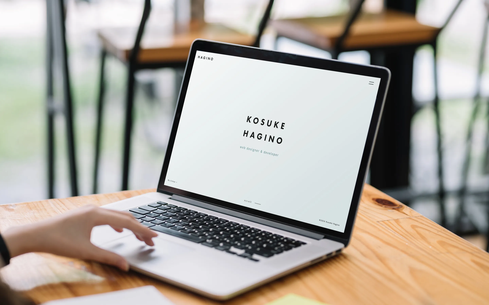
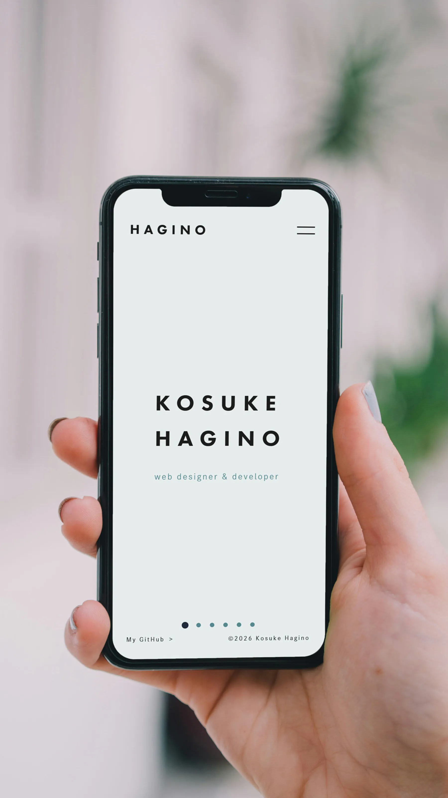

portfolio


転職活動のためにポートフォリオを制作しました。採用担当者の方に自身を知ってもらうこと、何ができるのか、どういうことを心掛けているのかなどをページやセクションごとに分けて情報を整理し、興味をもって見ていただけるようなデザインや動きを意識しました。また、CSSカスタムプロパティ(変数)などを使って、一貫性があってメンテナンス性が高いコーディングを心掛けることで、チーム内においても円滑な連携に貢献したいと考えています。
- ターゲット
- Web制作に携わる企業の採用担当者、現場責任者の方々
- 課題
- 転職活動をするうえで、制作物をまとめたサイトがない。自身の経歴や人柄だけでなく、制作物のこだわりポイントやコーディングの実装力などを見てほしい。
- 目的
- まずは採用担当者の方にポートフォリオを見ていただき、自身の経歴や人柄、制作物を知っていただく。その上で興味を持っていただき、書類通過を目指す。
- 制作期間
-
企画・情報設計約2週間デザイン約2週間コーディング約8週間
- 使用ツール
-
開発環境VS Code / Git言語HTML / CSS / JavaScriptデザインFigma / Photoshop
- こだわりポイント-その１
- ページ数が増えるにつれ、スタイルの管理が複雑になり、修正に時間がかかる懸念がありました。 BEM設計とCSS変数を導入し、カラー変更や余白調整を一箇所で完結できるようにしたことで、保守・管理の時間を大幅に削減しました。
- こだわりポイント-その２
- JSで動くパーツは見た目の変化だけで、スクリーンリーダー等の支援技術を利用するユーザーに状態が伝わらない課題がありました。 aria-expanded等のARIA属性を適切に実装し、情報の変化を音でも伝えることで、全てのユーザーにとって使いやすい品質を追求しました。
- こだわりポイント-その３
- 情報が煩雑だと、採用担当者が知りたい情報（スキルや実績）に辿り着く前に離脱してしまうリスクがありました。 情報の優先順位を整理したワイヤーフレームを徹底することで、迷わない導線を実現しました。
- こだわりポイント-その４
- 演出にこだわると画像が重くなり、ページの読み込み速度が低下してストレスを与える懸念がありました。 画像をWebP形式に変換して軽量化を図る一方、Lenisによる滑らかなスクロール演出を取り入れることで、快適な閲覧環境と心地よい操作感を両立させました。
other
その他の制作物です。
back to works
get in touch / contact me / get in touch / contact me /
get in touch / contact me / get in touch / contact me /